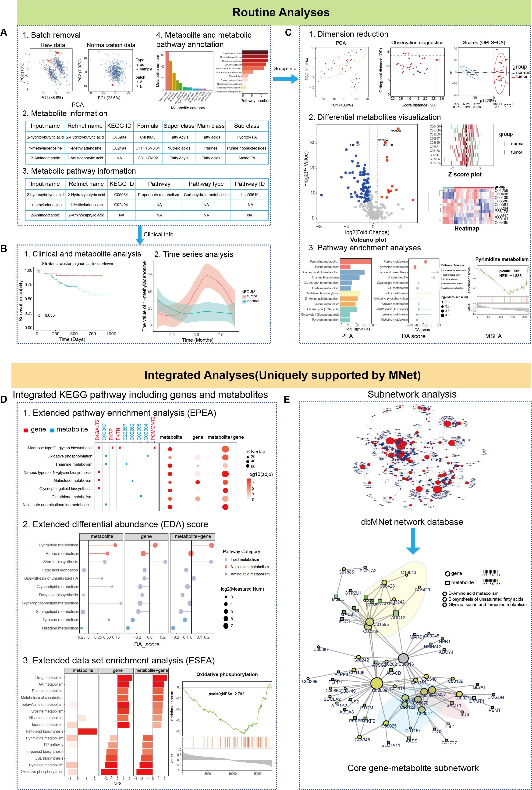

MNet
2024-02-01
Chapter 1 Introduction & Installation
The surge in metabolomics and transcriptomic data has necessitated the development of innovative network analysis tools for the integrated analysis of multi-omics data. However, current tools often focus on individual pathways, extracting the subnetwork for the interested genes and metabolites or extracting the correlation subnetwork, neglecting the valuable information embedded in gene-metabolite or metabolite-metabolite knowledge networks across all metabolic pathways. In response to this gap, we introduce an integrated analytical tool MNet, an R package for mining metabolomics coupled with clinical and transcriptomic data. MNet introduces three key feature to enhance the analytical capabilities. Firstly, MNet incorporates a built-in knowledgebase called ‘dbMNet’ that has been curated over time by experts. It represents a unique reference resource for metabolomics, which includes all currently available gene-metabolite pairs in humans, as well as metabolite-metabolite pairs. Secondly, MNet facilitates extended pathway enrichment analysis (EPEA), extended differential abundance analysis (EDA) and extended data sets enrichment analysis (ESEA). These functionalities enable the identification of dysregulated metabolic pathways by simultaneously considering both metabolites and genes. Thirdly, based on ‘dbMNet’ knowledgebase, MNet supports metabolic-related network analysis, considering both gene-metabolite and metabolite-metabolite pairs. Building upon case presentations, MNet emerges as a pivotal tool, demonstrating its efficacy in delivering a comprehensive grasp of metabolic dysregulation. It stands out as an invaluable resource, empowering researchers with the capability to conduct thorough and insightful multi-omics investigations.
1.1 Overview of Workflow
The package MNet is designed to provide a collection of functionalities aiding in metabolome data interpretation together with clinical data and gene expression data. It not only supports the routine analyses and visualisations in terms of metabolomic datasets (including but not limited to: differential metabolites analyses/visualisations/feature selection), the extended pathway enrichment analyses which is designed to detect which pathways are differentially abundant between two conditions, but also is capable of carrying out integrated analysis of metabolic and gene expression data (the metabolite and gene pathway analyses and the subnetwork analyses of metabolite-gene network analyses).

1.2 Installation
The R package MNet requires R version 4.0.0 or higher, please see https://cran.r-project.org.
MNet is available for all operating systems and can be installed via the Github.
check the package ‘MNet’ successfully installed